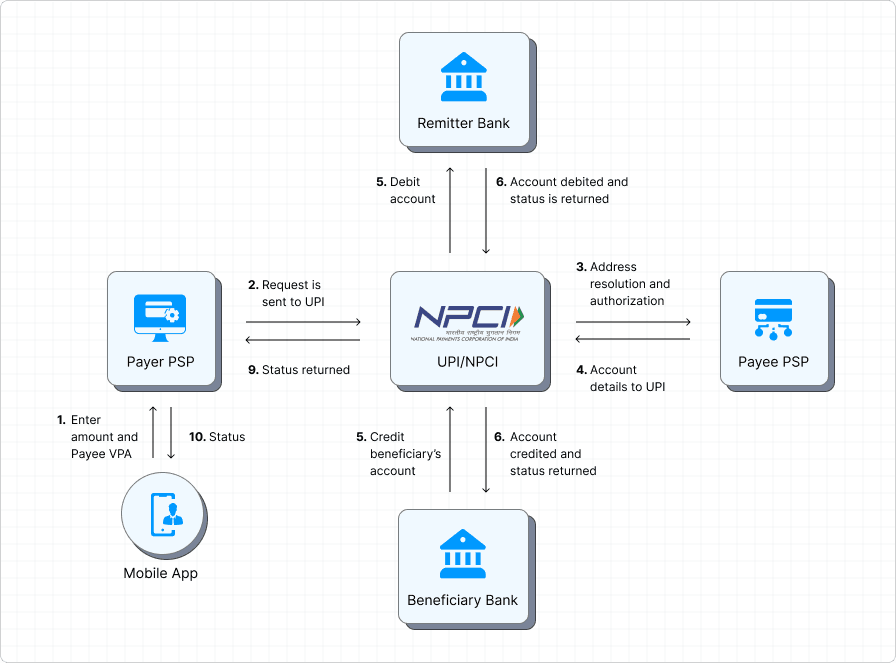

Distributed Payment Switch Architecture
A production-grade simulation of the core infrastructure powering the Unified Payments Interface (UPI). Engineered for strict ACID guarantees, sub-second latency, and horizontal scalability.
A production-grade simulation of the core infrastructure powering the Unified Payments Interface (UPI). Engineered for strict ACID guarantees, sub-second latency, and horizontal scalability.
Where this architecture fits within the UPI ecosystem.
In the real world, UPI is a massive multi-party network. The user initiates a request via a Third-Party App (e.g., Google Pay), which sends the request to a sponsor PSP Bank. The PSP Bank routes the request to the central NPCI Switch. NPCI acts as the clearinghouse- it validates the VPAs, identifies the Remitter and Beneficiary banks, and synchronously orchestrates the debit and credit legs directly with the banks' core ledgers before responding to the user.

This project focuses on building the highly-available, fault-tolerant NPCI switch that sits in the middle, partitioned into three internal microservices:
Decoupled services maintaining state through the multi-leg Saga pattern.
%%{init: {'theme': 'dark', 'themeVariables': { 'background': '#0f0f11' }}}%%
sequenceDiagram
participant App as External App
box rgb(25, 25, 30) NPCI Switch
participant PSP
participant Core
participant Adapter
end
participant Remitter as RemBank
participant Ben as BenBank
App->>PSP: POST /process
PSP->>Core: Kafka: payment.req
note over Core: Atomic Save (DEBIT_PENDING)
Core->>Adapter: Kafka: bank.inst (Debit)
Adapter->>Remitter: POST /debit
Remitter-->>Adapter: 200 OK
Adapter->>Core: Kafka: bank.res
note over Core: Update Leg (CREDIT_PENDING)
Core->>Adapter: Kafka: bank.inst (Credit)
Adapter->>Ben: POST /credit
Ben-->>Adapter: 200 OK
Adapter->>Core: Kafka: bank.res
note over Core: Saga Complete (SUCCESS)
Core->>PSP: Kafka: payment.res
PSP-->>App: Poll: Success
Architectural solutions to distributed computing problems.
Atomically commits database state and Kafka payloads to a single Postgres transaction. A background relay worker guarantees At-Least-Once Delivery, preventing dangerous dual-write network failures.
Since SQL rollbacks fail across microservices, the Core-Service maintains eventual consistency by automatically queuing a compensating `REFUND` event if a credit transaction fails.
Replaces synchronous APIs with Apache Kafka to eliminate thread-blocking. Safely buffers requests during downstream bank outages without dropping critical financial data.
Prevents retry duplicates. Redis caches successful hashes for ultra-fast (<10ms) rejection, while strict Postgres `UNIQUE` constraints physically block edge-case race conditions.
Cron workers actively sweep the database for stale `PENDING` records. They force the Bank Adapter to query the actual truth from external banks, auto-healing the local state machine.
Independent services powering the distributed switch.